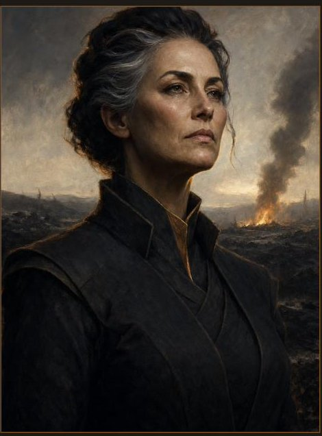

Sela
House Whitehart · 19
The Called. A goatherd hears a voice — or does not — and the house makes her its public meaning, whether she consents or not.
The people of Book One first, then the wider realm behind them — recorded without judgement, as the archive requires. Most of the Ten Houses reach the valley only as a name, a good, or a distant pressure.
House Whitehart · 19
The Called. A goatherd hears a voice — or does not — and the house makes her its public meaning, whether she consents or not.

House Whitehart · 45
The Tester. Sixteen years turning uncertainty into verdict; now he carries the one thing a tester should not own — his first doubt.

House Whitehart · ~60
Head of the listening house. Fifty years of authority built from stillness. The book's three interludes are hers.

House Whitehart · 24
The Unwritten. He tends the niches and knows every name in the wall; the house has never been permitted to speak his.

The valley · 52
Col's mother. She keeps the same vigil at the boundary each first snow, asking only that a name return to ordinary speech.

The valley
A worker and guide: proud, practical, and loved. Standing, money, and a horse promised to a boy all lean on a single choice.

House Blackcrest
The Jubilee Herald. He comes to write the valley down — a mercy to the forgotten, and a record that can become a weapon.

House Whitehart
Law and rite. She makes the correct word binding, even when the correct word wounds.

House Whitehart · 16
A novice whose sincere love turns ordinary acts into signs. No liar — and an engine of myth all the same.
Other houses enter the valley as law, goods, and political weather — never as a lecture on themselves.

House Stonebear
An oath-witness who keeps the boundary exactly as it is written — honorable, coherent, and ruinous.

House Ravenshade · Duskport · 46
A trader and ledger-keeper who feeds the valley on credit and moving goods. Her usefulness is real; so is her price.

Stormrider-linked · 29
A traveler carrying contradictory news of Garron — honest enough not to pretend it is certain.

House Stormrider · 38
A servant in Nella's party who struggles to say I, and carries scars the book declines to explain.
Series canon. Beyond Whitehart, these leaders are felt in Book One as a name, a good, or a distant pressure — not yet met on the page.

House Blackthorn
The planner who always acts too late.

House Ravenshade
All her power is borrowed, and the patron it is borrowed from is failing.

House Ashbourne
The old rider who doubts what the Wall of Names cost.

House Stormrider
Unity holds only as long as the uniter lives. The Binder is dying — off-page, all through Book One.

House Ironvale
Head of the house that measured everything in the realm.

House Blackcrest
Keeper of the Chronicle of Victory.

House Stonebear
Entirely at peace with the cost of a kept word.

House Tidebreaker
Charts of everything, shared with no one; her lighthouse shines out over the empty sea.

House Phoenix
A house built on scorched ground that refuses, on principle, to look down.